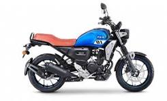
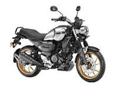
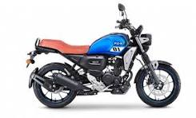
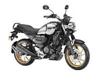
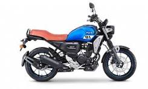
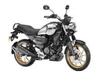

Gallery
 



The Yamaha FZ-X is the perfect combination of style, comfort, and performance. Explore the urban streets or the open highways with this powerful and stylish bike.
| Engine Type | Air-cooled, 4-stroke, SOHC, 2-valve |
|---|---|
| Displacement | 149cc |
| Maximum Power | 12.4 PS @ 7250 rpm |
| Maximum Torque | 13.3 Nm @ 5500 rpm |
| Fuel Tank Capacity | 10 liters |

